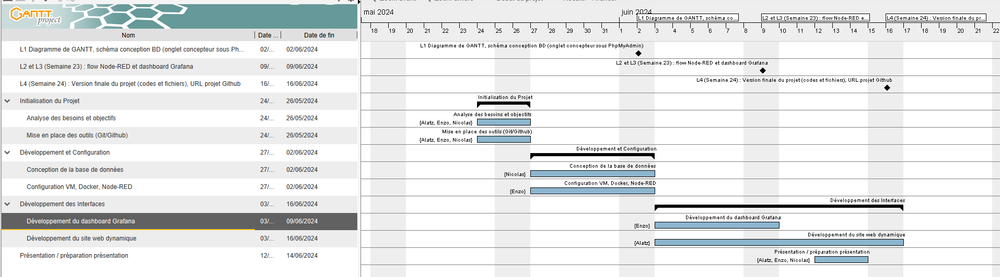
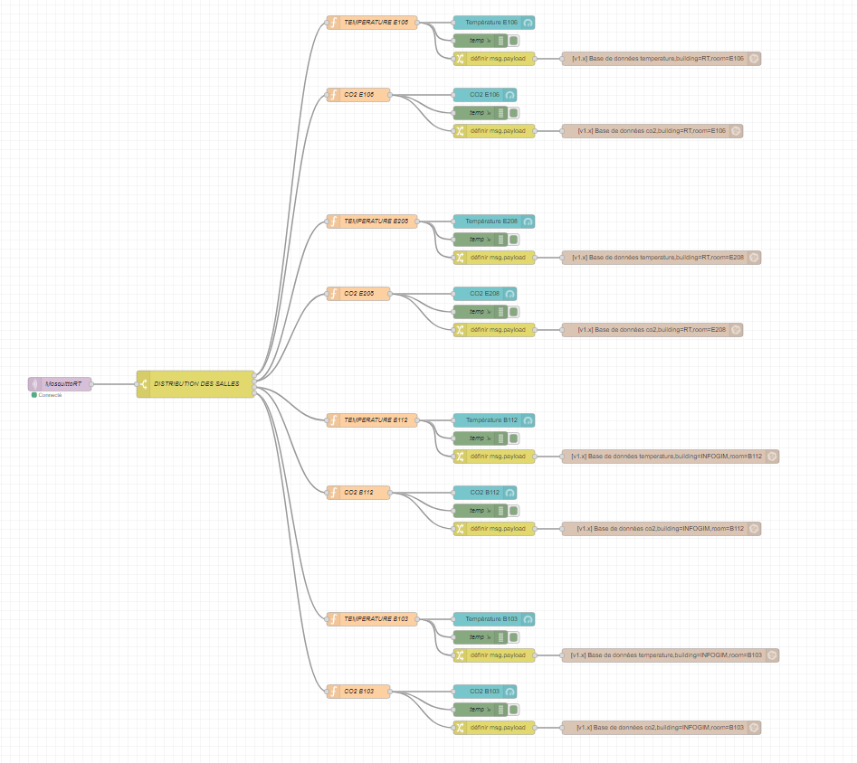
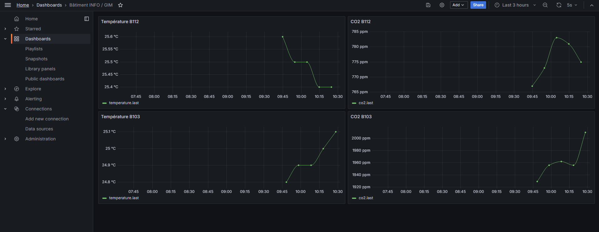
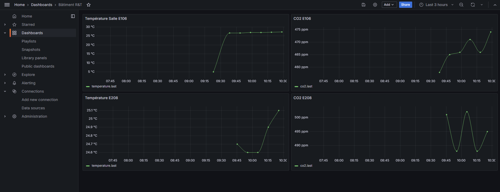

Ce premier diagramme de Gantt provisionnelle n'a pas beaucoup évolué dans le temps, ce qui a changé, c'est que le PHP a pris plus de temps que prévu.
Pour cette Saé, je me suis occupé avec Nicolas de la seconde approche. Dans mon cas, j'ai effectué le PHP et le site web qui a permis, grâce au script de récupération de données, de les afficher sur le site web. J'ai aussi effectué le Gantt provisoire et le final.
Les problèmes que j'ai rencontrés étaient de bien comprendre et de trouver et utiliser les bonnes méthodes et les bonnes approches pour y parvenir. Les TP en 209 m'ont bien aidé pour me mettre sur la bonne voie, mais aussi pour bien démarrer avec la base de données.
Durant cette SAE, nous nous sommes occupés avec Alatz de la deuxième approche possible avec la base de données SQL, le script de récupération des données avec bash et de la partie PHP. Personnellement, j’ai réalisé la base de données avec PhpMyAdmin et j’ai créé le script de récupération afin de remplir les différentes tables de façon totalement automatique.
Le problème principal rencontré est que j’ai dû refaire 3 ou 4 fois le TP de lancement avec XAMPP et PhpMyAdmin puisque plusieurs fois nous avons eu des problèmes lorsque nous passions d’une salle à l’autre avec des versions différentes et des fichiers qui se copiaient mal. Ceci a été réglé lorsque nous avons décidé de le faire en autonomie chez nous.
Durant cette SAE, 2 problèmes majeurs m’ont entravé. L’un était lors de la mise en place de Node-RED, je ne savais pas comment configurer un « nœud fonction » afin que seule la valeur voulue ressorte. Cela était primordial pour moi afin d’avoir une meilleure lisibilité sur mon Flow Node-RED et afin de n’avoir qu’un seul nœud de connexion « mqtt in ». J’ai donc dû chercher sur Internet en vain puis j’ai demandé à des camarades d’autres groupes qui m’ont alors apporté la réponse.
Le deuxième problème majeur n’était pas un problème de compréhension ou bien de difficulté, mais bien un problème de progression. En effet, lors de la SAE23, à de nombreuses reprises, j’ai dû recommencer l’approche des Dockers, Flow Node-RED et Grafana suite à des pertes de données. La clé USB s’étant corrompue 3 fois, j’ai donc dû recommencer 3 fois, ce qui a constitué une perte de temps énorme sur les séances d’autonomie prévues à cet effet.
 Pour conclure sur cette Saé, elle a été très intéressante pour voir comment se partager un projet pour le mener à bien et savoir s'organiser en autonomie. En ce qui concerne la Saé en elle-même, il aurait fallu plus de temps car nous n'avons pas réussi à bien finir comme il se doit en allant plus loin et en finalisant tout très bien.